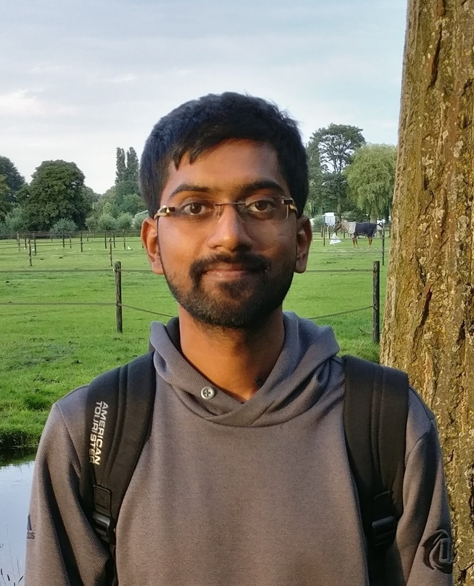

AbhinandanEmail : abhi [at] ms.u-tokyo.ac.jp Office : 3 Chome-8-1 Komaba, Meguro City, Tokyo I am a JSPS postdoctoral fellow at Graduate School of Mathematical Sciences, University of Tokyo. I am primarily interested in arithmetic geometry, in particular, questions in p-adic Hodge theory and p-adic cohomology theories. Previously, I was a postdoc in Lille. Before that, I was a doctoral student at Institut de Mathématiques de Bordeaux under the supervision of Denis Benois and Nicola Mazzari. Before joining the doctoral program, I was an ALGANT master student in Leiden and Bordeaux. Even before that, I was a software engineer. My CV.
Papers:
PhD Thesis: Finite height representations and syntomic complex. HAL thèses
Other writings:

| |